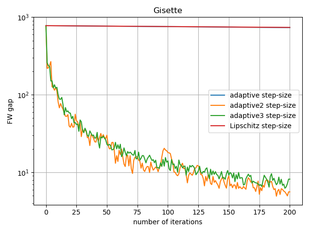

Note
Click here to download the full example code
Step-size and curvature on the Frank-Wolfe algorithm¶
Plot showing both the optimal step-size and norm of Hessian for the Frank-Wolfe algorithm on a logistic regression problem.
The step-size is computed as the one that gives the largest
decrease in objective function (see exact_ls()). The
norm of the Hessian is its largest singular value.
In the plot we can see how the variance of the step-size is much higher than the one associated with the Hessian’s norm.
References¶
http://fa.bianp.net/blog/2019/adaptive_fw/
import matplotlib.pylab as plt
from sklearn import datasets
from scipy import optimize
from scipy.sparse import linalg as splinalg
import numpy as np
import copt as cp
# Construct a toy classification dataset with 100 samples and 10 features
n_samples, n_features = 100, 10
X, y = datasets.make_classification(n_samples, n_features, random_state=0)
# Define an exact line search strategy
def exact_ls(kw):
def f_ls(gamma):
return kw['f_grad'](kw['x'] + gamma * kw['d_t'])[0]
ls_sol = optimize.minimize_scalar(f_ls, bounds=[0, 1], method='bounded')
return ls_sol.x
l1_ball = cp.utils.L1Ball(n_features / 2.)
f = cp.utils.LogLoss(X, y)
x0 = np.zeros(n_features)
trace_step_size = []
trace_hessian_norm = []
def cb(kw):
trace_step_size.append(kw['step_size'])
Hs = splinalg.LinearOperator(
shape=(n_features, n_features),
matvec=f.Hessian(kw['x']))
s, _ = splinalg.eigsh(Hs, k=1)
trace_hessian_norm.append(s)
out = cp.minimize_FW(
f.f_grad, l1_ball.lmo, x0, callback=cb, max_iter=1000,
backtracking=exact_ls)
# Focus on the last 4/5, since the first iterations
# tend to have a disproportionally large step-size
n = len(trace_step_size) // 5
trace_step_size = trace_step_size[n:]
trace_hessian_norm = trace_hessian_norm[n:]
fig, ax1 = plt.subplots()
color = '#67a9cf'
ax1.set_xlabel('number of iterations')
ax1.set_ylabel('step-size', color=color)
ax1.plot(n + np.arange(len(trace_step_size)), trace_step_size, color=color,
alpha=0.5)
ax1.tick_params(axis='y', labelcolor=color)
ax2 = ax1.twinx() # instantiate a second axes that shares the same x-axis
color = '#ef8a62'
ax2.set_ylabel('Hessian norm', color=color) # we already handled the x-label with ax1
ax2.plot(n + np.arange(len(trace_hessian_norm)), trace_hessian_norm, color=color)
ax2.tick_params(axis='y', labelcolor=color)
fig.tight_layout() # otherwise the right y-label is slightly clipped
plt.xlim(n, n + len(trace_step_size))
plt.grid()
plt.show()
Total running time of the script: ( 0 minutes 12.559 seconds)